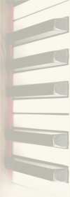
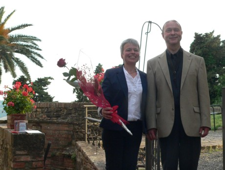
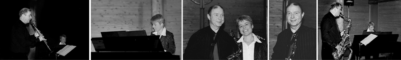
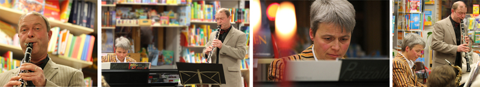
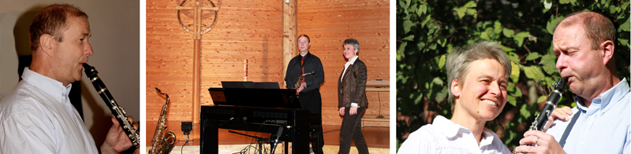
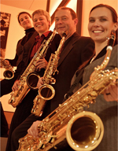

| 2009 | ||
| 16. Januar 2009 | Quadro magico | Holzkirchen - Segenskirche "Eine musikalische Zeitreise" |
| 24. Januar 2009 | Quadro magico | Großkarolinenfeld "Eine musikalische Zeitreise" |
| 7. November 2009 | Quadro magico | Otterfing - Otterfinger Kulturwoche "Der musikalische Jahreskreis" |

| 2010 | ||
| 16. Januar 2010 | Quadro magico | Großkarolinenfeld "Der musikalische Jahreskreis" |
| 11. Dezember 2010 | Quadro magico | München Perlach - Laetarekirche Adventskonzert gemeinsam mit dem Münchner Chor "d'Accord" |
| 18. Dezember 2010 | Quadro magico | Weyarn - Klosterkirche Adventskonzert gemeinsam mit dem Holzkirchner Chor "Cantica nova" |
| 19. Dezember 2010 | Quadro magico | Holzkirchen - Oberbräusaal Adventskonzert gemeinsam mit dem Holzkirchner Chor "Cantica nova" |
| 24. Dezember 2010 | Duo Facile | Holzkirchen - Segenskirche musikalische Umrahmung der Christmette |

| 2011 | ||
| 5. Juni 2011 | Diethart Stecher |
München - Movimento Konzert mit Gregory Wiest "Licht und Schatten" Kurzer Ausschnitt des Konzerts |
| 16. Juni 2011 | Duo Facile | Casaglia (Toskana) Konzert "Lieder ohne Worte" |
| 24. September 2011 | Duo Facile | Dietramszell Festkonzert anlässlich des 50-jährigen Jubiläums der Michaelskirche in Dietramszell "Musik kennt keine Grenzen" |
| 20. November 2011 | Duo Facile | Holzkirchen - Segenskirche Benefizkonzert "Musik kennt keine Grenzen" |
| 25. November 2011 | Duo Facile | Holzkirchen - Bücherecke musikalisches Festprogramm |
| 24. Dezember 2011 | Duo Facile | Holzkirchen - Segenskirche musikalische Umrahmung der Christmette |

| 2012 bis 2014 | ||
| 15. Januar 2012 | Duo Facile | München - Jubilatekirche Benefizkonzert für Tanzania "Musik kennt keine Grenzen" |
| 13. Mai 2012 | Duo Facile | Sauerlach - Zachäuskirche Konzert "Musik kennt keine Grenzen" |
| 1. Juni 2012 | Duo Facile | Casaglia (Toskana) Konzert "Musik kennt keine Grenzen" |
| 15. Juni 2013 | Quadro magico | Augsburg »DIE LANGE NACHT DES WASSERS« |
| 20. Oktober 2013 | Duo Facile | Sauerlach - Zachäuskirche Konzert "Notte Italiana" |
| 17. November 2013 | Duo Facile | Holzkirchen - Segenskirche Konzert "Notte Italiana" |
| 8. Dezember 2013 | Duo Facile | Trudering - Friedenskirche Adventskonzert |
| 24. Dezember 2013 | Duo Facile | Sauerlach - Zachäuskirche Christmette |
| 12. Januar 2014 | Duo Facile | München - Jubilatekirche Benefizkonzert "Notte Italiana" |
| 23. Februar 2014 | Duo Facile | Miesbach - Apostelkirche Benefizkonzert "Notte Italiana" |
| 10. Juni 2014 | Duo Facile | Casaglia (Toskana) Konzert "Concerto Italiano" |
| 24. Dezember 2014 | Duo Facile | Holzkirchen - Segenskirche musikalische Umrahmung der Christmette |
| 26. Dezember 2014 | Duo Facile | Holzkirchen - Segenskirche Weihnachtsgottesdienst |
| 27. Mai 2015 | Duo Facile | Casaglia (Toscana) Konzert "Musica con Passione" |
| 16. Juni 2015 | Duo Facile und Katja Lämmermann |
Holzkirchen - Segenskirche "Das ist doch der Gipfel" Benefizkonzert für die Sanierung des Glockenturmes |
| 19. 6. 2016 | Duo Facile | München - Waldperlach "Lieder einer Welt" Benefizkonzert für die Flüchtlingshilfe |
Duo Facile - das sind:
Diethart Stecher (Klarinette und Saxophone)
Gertrud Stecher (Klavier und Orgel)

Quadro Magico - das Holzkirchner Saxophonquartett:
Diethart Stecher (Alt-Saxophon)
Agnes Reiter (Alt-Saxophon)
Gertrud Stecher (Tenor-Saxophon)
Bettina Schloßnikel (Bariton-Saxophon)